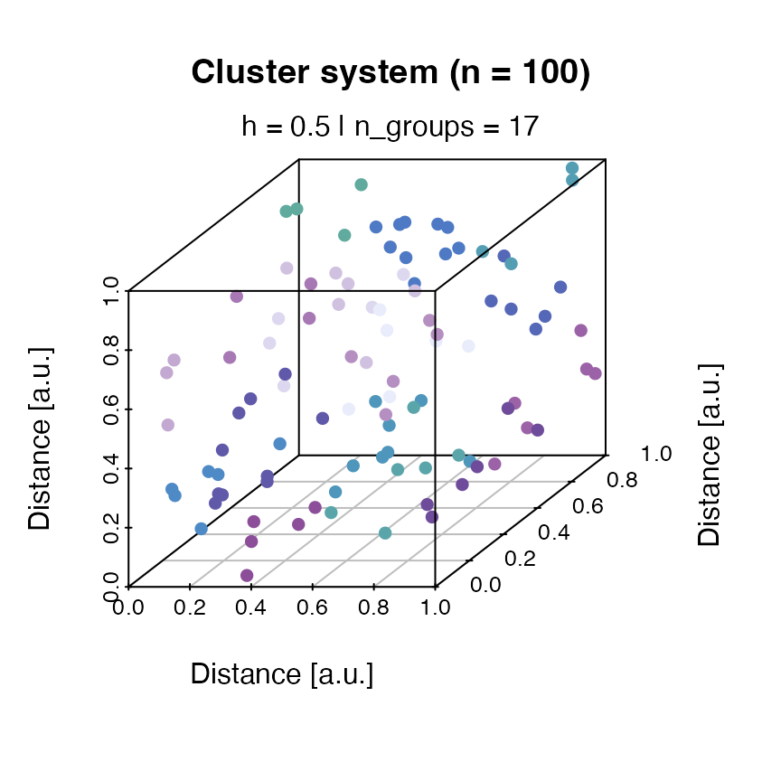

`RLumCarlo': Tedious features - fine examples
Sebastian Kreutzer, Johannes Friedrich, Vasilis Pagonis, Christoph Schmidt
RLumCarlo: v0.1.10 | last modified: 2025-09-19
Source:vignettes/RLumCarlo_-_Getting_started_with_RLumCarlo.Rmd
RLumCarlo_-_Getting_started_with_RLumCarlo.RmdScope
`RLumCarlo’ is a collection of energy-band models to simulate luminescence signals in dosimetric materials using Monte-Carlo (MC) methods for various stimulation modes. This document aims at supplementing the package documentation and elaborating the package examples.
The models in `RLumCarlo’
Overview
| TRANSITION | BASE MODEL | IRSL | OSL | LM-OSL | TL |
|---|---|---|---|---|---|
| Delocalised | OTOR | - | X | X | X |
| Localised | GOT | X | - | X | X |
| Excited state tunnelling | LTM | X | - | X | X |
In the table above column headers refer to stimulation modes, which are infrared stimulated luminescence (IRSL), optically stimulated luminescence (OSL), LM-OSL (Bulur 1996), and thermally stimulated luminescence (short: TL). In the column `BASE MODEL’ OTOR refers to `One Trap-One Recombination Centre’, GOT to `General One Trap’, and LTM to `Localized Transition Model’ (Jain et al. 2012; Pagonis et al. 2019). For general overview we refer to the excellent book by Chen and Pagonis (2011).
Where to find them
The following table lists models as implemented in `RLumCarlo’ along
with the R function call and the corresponding R (*.R)
and C++ (*.cpp) files. The modelling takes place in the C++ functions
which are wrapped by the R functions with a similar name. If you,
however, want to cross-check the code, you should inspect files with the
ending .cpp.
| MODEL_NAME | R_CALL | CORRESPONDING_FILES |
|---|---|---|
| MC_CW_IRSL_LOC | run_MC_CW_IRSL_LOC() | R/run_MC_CW_IRSL_LOC.R src/MC_C_MC_CW_IRSL_LOC.cpp |
| MC_CW_IRSL_TUN | run_MC_CW_IRSL_TUN() | R/run_MC_CW_IRSL_TUN.R src/MC_C_MC_CW_IRSL_TUN.cpp |
| MC_CW_OSL_DELOC | run_MC_CW_OSL_DELOC() | R/run_MC_CW_OSL_DELOC.R src/MC_C_MC_CW_OSL_DELOC.cpp |
| MC_ISO_DELOC | run_MC_ISO_DELOC() | R/run_MC_ISO_DELOC.R src/MC_C_MC_ISO_DELOC.cpp |
| MC_ISO_LOC | run_MC_ISO_LOC() | R/run_MC_ISO_LOC.R src/MC_C_MC_ISO_LOC.cpp |
| MC_ISO_TUN | run_MC_ISO_TUN() | R/run_MC_ISO_TUN.R src/MC_C_MC_ISO_TUN.cpp |
| MC_LM_OSL_DELOC | run_MC_LM_OSL_DELOC() | R/run_MC_LM_OSL_DELOC.R src/MC_C_MC_LM_OSL_DELOC.cpp |
| MC_LM_OSL_LOC | run_MC_LM_OSL_LOC() | R/run_MC_LM_OSL_LOC.R src/MC_C_MC_LM_OSL_LOC.cpp |
| MC_LM_OSL_TUN | run_MC_LM_OSL_TUN() | R/run_MC_LM_OSL_TUN.R src/MC_C_MC_LM_OSL_TUN.cpp |
| MC_TL_DELOC | run_MC_TL_DELOC() | R/run_MC_TL_DELOC.R src/MC_C_MC_TL_DELOC.cpp |
| MC_TL_LOC | run_MC_TL_LOC() | R/run_MC_TL_LOC.R src/MC_C_MC_TL_LOC.cpp |
| MC_TL_TUN | run_MC_TL_TUN() | R/run_MC_TL_TUN.R src/MC_C_MC_TL_TUN.cpp |
Each model is run by calling one of the R functions
starting with run_. Currently, three different model types
(TUN: tunnelling, LOC: localised transition, DELOC: delocalised
transition) are implemented for the stimulation types TL, IRSL, LM-OSL,
and ISO (isothermal). Please note that each model has different
parameters and requirements.
`RLumCarlo’ model parameters and variables
The following table summarises the parameters used in the implemented MC models along with their physical meaning, units and the range of realistic values. This range represents just a rough guideline and might be exceeded for particular cases.
Examples
The following examples illustrate the capacity of `RLumCarlo’, by using code-snippets deploying longer simulation times than allowed for the standard package examples, which aim at a functionality test.
Example 1: A first example
The first example is an iso-thermal decay curve using the tunnelling
model (other models work similarly). Returned are either the simulated
signal or the estimated remaining trapped charge carriers. The Function
plot_RLumCarlo() provides an easy way to visualise the
modelling results and is here called using the tee operator
%T> from the package magrittr (which is
imported by `RLumCarlo’). Simulation results are stored in the object
results while, at the same time, piped to the function
plot_RLumCarlo() for the output visualisation.
Model the signal
The most obvious modelling output is the luminescence signal itself,
our example below simulates an iso-thermal (ITL) signal for a
temperature (T) of 200 °C over 5,000 s using a tunnelling
transition model. Trap parameters are
eV for the trap depth and a frequency factor of
(1/s). The parameter rho
()
defines the recombination centre density.
results <- run_MC_ISO_TUN(
E = 1.2,
s = 1e10,
T = 200,
N_e = 200,
rho = 0.007,
clusters = 10,
times = seq(0, 5000)
) %T>%
plot_RLumCarlo(norm = TRUE,
legend = TRUE,
main = "Iso-thermal decay (TUN)") In the example above
In the example above N_e is a scalar, which means that all
clusters start with the same number of electrons (here 200). However,
`RLumCarlo’ supports different starting conditions with regard to the
initial number of electrons. For example, one could assume that the
number of initial electrons vary randomly between 190 and 210. Such a
situation is created in the next example. Generally, `RLumCarlo’
supports such an input for the parameters N_e and
n_filled.
results <- run_MC_ISO_TUN(
E = 1.2,
s = 1e10,
T = 200,
N_e = sample(190:210,10,TRUE),
rho = 0.007,
clusters = 10,
times = seq(0, 5000)
) %T>%
plot_RLumCarlo(norm = TRUE,
legend = TRUE,
main = "Iso-thermal decay (TUN) for varying N_e")
Model remaining charges
The first example can be slightly altered to provide alternative insight. Instead of the luminescence signal, the variant below returns the number of remaining electrons in the trap.
results <- run_MC_ISO_TUN(
E = 1.2,
s = 1e10,
T = 200,
rho = 0.007,
times = seq(0, 5000),
output = "remaining_e"
) %T>%
plot_RLumCarlo(
legend = TRUE,
ylab = "Remaining electrons"
)
Understanding the numerical output
In both cases the modelling output is an object of class
RLumCarlo_Model_Output, which is basically a list
consisting of an array and a numeric
(vector).
str(results)## List of 2
## $ signal: num [1:5001, 1:21, 1:10] 200 200 200 200 200 200 200 200 200 200 ...
## ..- attr(*, "dimnames")=List of 3
## .. ..$ : NULL
## .. ..$ : NULL
## .. ..$ : NULL
## $ time : int [1:5001] 0 1 2 3 4 5 6 7 8 9 ...
## - attr(*, "class")= chr "RLumCarlo_Model_Output"
## - attr(*, "model")= chr "run_MC_ISO_TUN"While this represents the full modelling output results, its
interpretation might be less straight forward, and the user may want to
condense the information via summary(). The function
summary() is also used internally by the function
plot_RLumCarlo() to simplify the data before there are
plotted.
df <- summary(results)## time mean y_min y_max sd
## Min. : 0 Min. :3062 Min. :3029 Min. :3084 Min. : 1.16
## 1st Qu.:1250 1st Qu.:3173 1st Qu.:3148 1st Qu.:3202 1st Qu.:12.46
## Median :2500 Median :3331 Median :3312 Median :3358 Median :15.69
## Mean :2500 Mean :3414 Mean :3392 Mean :3438 Mean :15.03
## 3rd Qu.:3750 3rd Qu.:3591 3rd Qu.:3573 3rd Qu.:3628 3rd Qu.:17.81
## Max. :5000 Max. :4199 Max. :4197 Max. :4200 Max. :20.69
## var sum
## Min. : 1.344 Min. :30616
## 1st Qu.:155.156 1st Qu.:31733
## Median :246.233 Median :33308
## Mean :237.984 Mean :34140
## 3rd Qu.:317.067 3rd Qu.:35906
## Max. :428.100 Max. :41987
head(df)## time mean y_min y_max sd var sum
## 1 0 4198.7 4197 4200 1.159502 1.344444 41987
## 2 1 4198.2 4196 4200 1.549193 2.400000 41982
## 3 2 4196.9 4194 4200 2.131770 4.544444 41969
## 4 3 4196.6 4194 4200 2.118700 4.488889 41966
## 5 4 4195.9 4193 4200 2.514403 6.322222 41959
## 6 5 4195.1 4191 4200 2.514403 6.322222 41951The call summarises the modelling results and returns a terminal
output and a data.frame with, e.g., the mean or the
standard deviation, which can be used to create plots for further
insight. For instance, the stimulation time against coefficient of
variation (CV in %):
plot(
x = df$time,
y = (df$sd / df$mean) * 100,
pch = 20,
col = rgb(0,0,0,.1),
xlab = "Stimulation time [s]",
ylab = "CV [%]"
)
Example 2: Combining two plots
The following examples use again the tunnelling model but for continuous wave (CW) infrared light stimulation (IRSL), and they combine two plots in one single plot window.
## set time vector
times <- seq(0, 1000)
## Run MC simulation
run_MC_CW_IRSL_TUN(A = 0.12, rho = 0.003, times = times) %>%
plot_RLumCarlo(norm = TRUE, legend = TRUE)
run_MC_CW_IRSL_TUN(A = 0.21, rho = 0.003, times = times) %>%
plot_RLumCarlo(norm = TRUE, add = TRUE)
Example 3: Testing different parameters
The example above can be further extended to test the effect of
different parameters. Contrary to the example above, here the results
are stored in a list and plot_RLumCarlo() is
called only one time and it will then iterate automatically over the
results to create a combined plot.
s <- 3.5e12
rho <- 0.015
E <- 1.45
r_c <- c(0,0.7,0.77,0.86, 0.97)
times <- seq(100, 450) # here time = temperature
results <- lapply(r_c, function(x) {
run_MC_TL_TUN(
s = s,
E = E,
rho = rho,
r_c = x,
times = times
)
})The plot output can be highly customised to provide a better visual experience, e.g., the manual setting of the colours and the legend.
## plot curves, but without legend
plot_RLumCarlo(
object = results,
ylab = "normalised TL signal",
xlab = "Temperature [\u00b0C]",
plot_uncertainty = "range",
col = khroma::colour("bright")(length(r_c)),
legend = FALSE,
norm = TRUE
)
## add legend manually
legend(
"topleft",
bty = "n",
legend = paste0("r_c: ", r_c),
lty = 1,
col = khroma::colour("bright")(length(r_c))
)
Example 4: Dosimetric cluster systems
`RLumCarlo’ supports the simulation of a cheap dosimetric cluster
system with spatial correlation. Such a dosimetric cluster system can be
created with the function create_ClusterSystem():
clusters <- create_ClusterSystem(n = 100, plot = TRUE)
The result is an arbitrary dosimetric system with randomly distributed
clusters. The Euclidean distance is used to group the clusters (colour
code). To use the system in the simulation, instead of providing a
scalar as input to clusters, the output of
create_ClusterSystem() can be injected in every
run_MC function.
run_MC_TL_LOC(
s = 1e14,
E = 0.9,
times = 0:100,
b = 1,
n_filled = 1000,
method = "seq",
clusters = clusters,
r = 1) %>%
plot_RLumCarlo()
Please note: For the simulation of a dosimetric cluster system, the
meaning of n_filled changes. Instead of defining the number
of electrons per cluster, it becomes the total number of electrons in
the system. Electrons are distributed according to the grouping of the
single clusters (the colours in the three-dimensional scatter plot).
Within one group, electrons are distributed evenly.